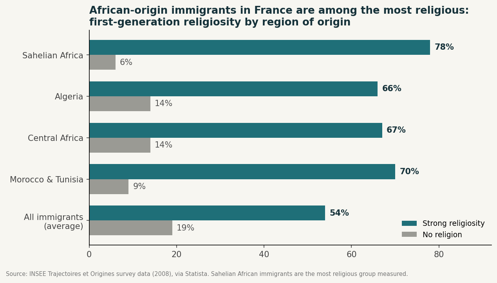
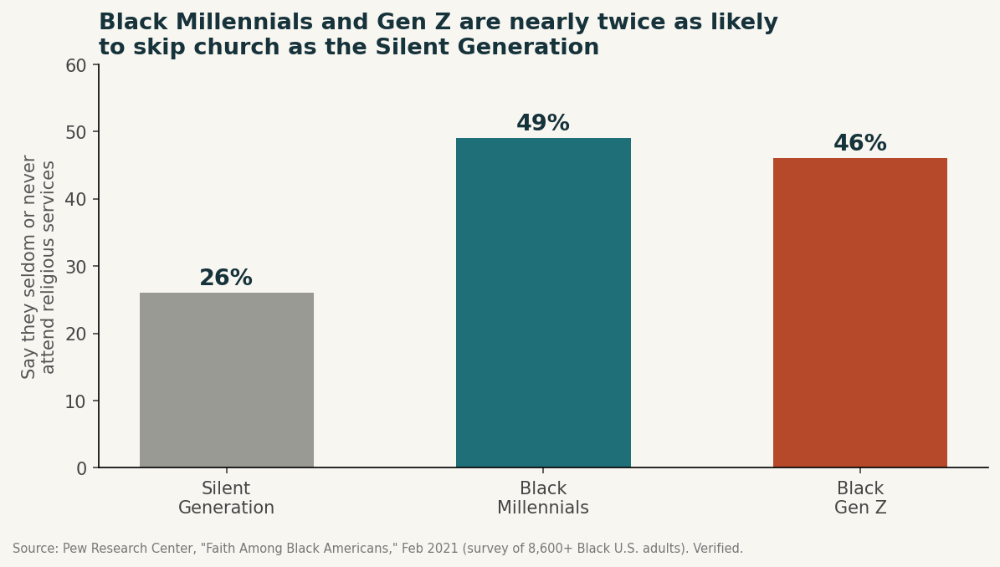
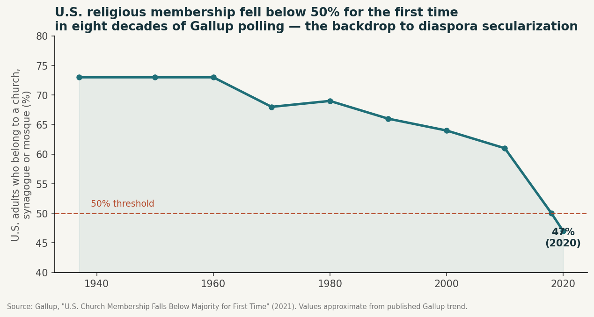
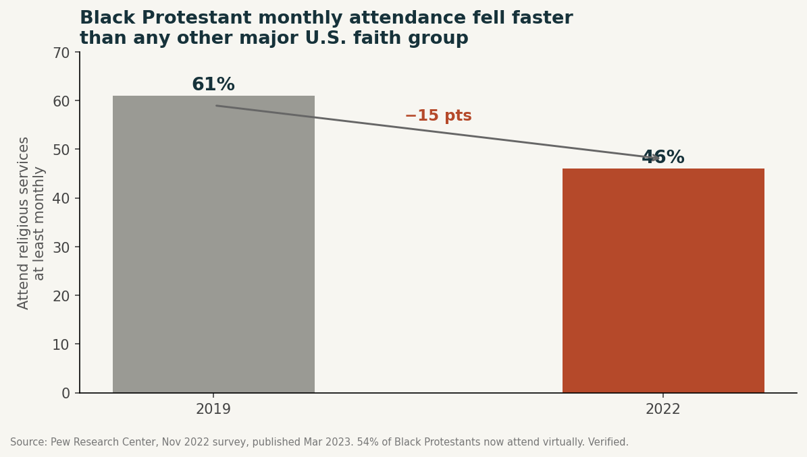
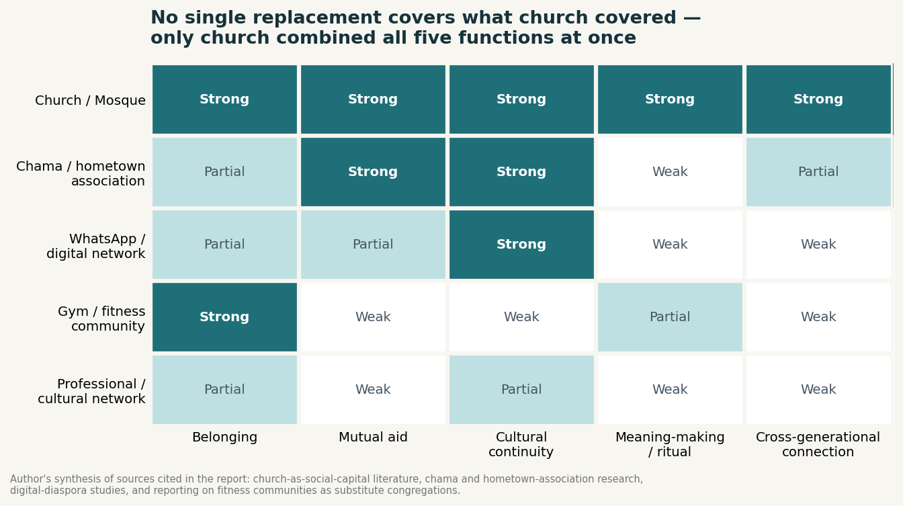
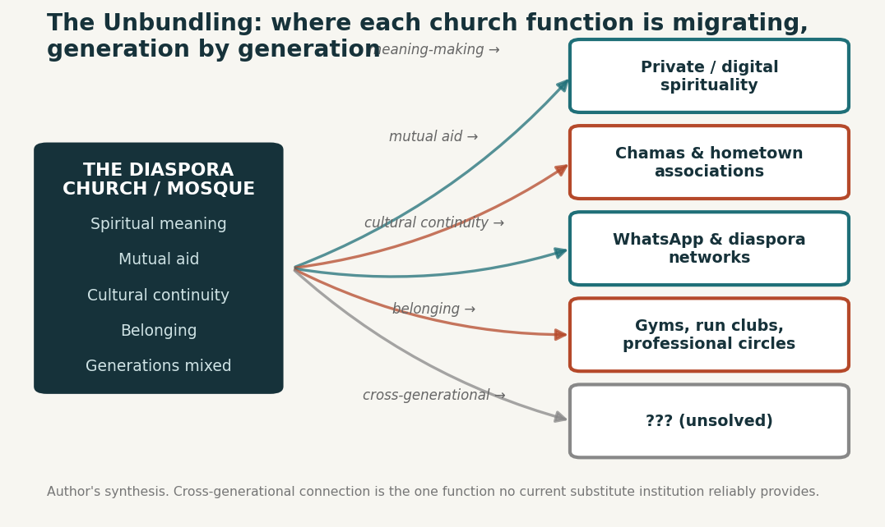

Faith in the diaspora.
For generations of Africans abroad, the church — and for many, the mosque — was never just worship. It was the job board, the language school, the marriage market, the welfare office and the one room where grandparents and grandchildren met weekly. That bundle is now unbundling — and this report maps what’s replacing it, function by function.
Section 01The Short Version
Two things are true at once, and the whole report lives in the tension between them:
- The migrant generation is the most religious population measured. In France, only 19% of immigrants who arrived after age 16 report no religion — against 58% of the native-born. In the US, only ~6% of African immigrants are religiously unaffiliated.
- Their children are leaving at twice their grandparents’ rate. Black Millennials (49%) and Gen Z (46%) are roughly twice as likely as the Silent Generation (26%) to seldom or never attend services (Pew, verified).
- The pandemic accelerated it: Black Protestant monthly attendance fell from 61% to 46% in three years — the steepest drop of any major US religious group — and 54% now attend virtually.
- What’s replacing church is not one thing but a portfolio: chamas for mutual aid, WhatsApp for connection, gyms and run clubs for weekly belonging, professional networks for identity — and a private, digital, hybrid spirituality for meaning.
- One function remains unclaimed: nothing in the replacement portfolio puts grandparents and grandchildren in the same room every week. That gap is the finding.
This is not a story of the diaspora losing faith. It is the story of faith’s functions being unbundled — and one of them having no new home yet.
Section 02How the Church Became the Diaspora’s Default Community
Sociologists studying African migration describe migrant-founded churches as parallel civic infrastructure: employment bureaux, translation services and informal welfare offices long before anyone gets to the sermon. Research on the African Christian diaspora calls them sources of social, cultural and spiritual capital at once (Adogame); geographer David Ley’s phrase is “the immigrant church as an urban service hub.”
Paris shows it concretely. Congolese and Ivorian evangelical churches run prayer clubs, football tournaments and post-service meals as deliberate solidarity mechanisms — because isolated migrants, some undocumented, need somewhere to be looked after and fed. And the scale is striking:

One study of just two Paris-suburb towns — Melun and Le Mée, population 60,000 — counted 17 African churches. A profile of one, Servir Jésus-Christ in Garges-lès-Gonesse, found 70% of members are immigrants over 30 who describe the church as the identitarian, linguistic and cultural anchor that French secular life does not provide. The same holds for the mosque among Senegalese, Malian and Fulani communities: researchers describe it as “a social space of belonging in the constant re-articulation of identity” — religious membership mattering most precisely when everything else in a migrant’s life feels fluid.
Section 03The Most Religious Migrants in the Data


Hold those two charts together and you get the engine of the story: the most religious people in Europe’s most secular societies are African migrants — which is why African-led churches boom in Paris, London and New York even as the historic denominations around them empty out.
Section 04The Generational Unraveling

The crucial detail for the diaspora: the erosion is not happening in the immigrant generation — African immigrants remain among the least unaffiliated groups Pew measures (~6%). It is concentrated in the children and grandchildren. And it sits on top of a much bigger wave:


African immigrant churches feel this fracture differently from the historic Black church, because the first generation is transplanting a homeland form of worship rather than inheriting a domestic one. UK research finds second-generation African Pentecostals questioning the relevance of practices built for a society they never lived in; a study of Ghanaian churches in Sydney catalogued fifteen distinct drivers of youth disengagement — outdated liturgy, weak youth leadership, little relational care. The Paris church with 70% immigrant membership? Only 30% of its congregation was born in France. Multiply that across hundreds of congregations and the French African evangelical boom looks substantially like a first-generation phenomenon whose second act is unproven.
Section 05Why Faith Erodes: Five Mechanisms
- Secular immersion. Grow up where religion has no social salience, and practice becomes optional rather than assumed — “swimming in a sea of secular individualism.”
- Communal religion meets individualist culture. African traditions are collective; Western societies file religion under private life. The mismatch is structural, not personal.
- Language loss. Much African worship is linguistically embedded — and surveys of Nigerian-heritage millennials show steep generational declines in native-language fluency and proverb knowledge, steepest among the diaspora-born.
- Hybrid identity work. The second generation increasingly expresses Africanness through music, fashion and art — curated cultural affiliation — rather than congregation membership. In one study, 41.7% described hybrid identities; 36% of Nigerian-heritage respondents wouldn’t fully claim the label “African Christian” at all.
- Time scarcity. Building a life abroad compresses everything — and congregational life is the first scheduled commitment to go.
Section 06Spiritual, Not Religious — But Not Secular Either
The data does not support a simple secularization story. Research on Black diaspora emerging adults finds spirituality remaining a core cultural resource even as congregational attendance drops; earlier surveys found 74% of African Americans and Caribbean Blacks calling themselves both religious and spiritual. New scholarship (Journal of Ethnic and Migration Studies, 2026) describes young African migrants building a hybrid, digitally mediated, highly individualized spiritual repertoire that travels with the migrant rather than anchoring them to one congregation.
Faith persists — but increasingly as something practiced quietly rather than displayed communally.
Section 07What Fills the Gap: The Replacement Portfolio

- Chamas, susus and esusu circles — the mutual aid successor. Kenyan chamas alone: 300,000+ registered groups holding roughly KES 300 billion (~$3bn+) — verified against multiple sources. Rotating payouts, trust-based governance, WhatsApp coordination, apps with M-Pesa rails for members abroad. What they replicate from church: financial obligation and rotating leadership. What they don’t: cosmology, moral instruction, rites of passage. Chamas manage money and welfare, not meaning.
- Hometown associations — the civic successor. Often intertwined with churches rather than competing (they fund church repairs back home). After Haiti’s 2010 earthquake, HTAs became critical reconstruction infrastructure — congregation-grade trust with development-organization focus.
- The WhatsApp group — the connective tissue. The diaspora’s new parish register: smaller, more porous, easier to leave — but easier to join, and infinitely more granular (a village group, a school-year group, a professional cohort) than any single congregation.
- The gym — the new congregation. Harvard Divinity’s “How We Gather” research found fitness communities replicating nearly every structural feature of church: fixed schedule, charismatic leader, ritualized shared suffering, a vocabulary of belonging. The linguistic tell: people go to church, but belong to their gym.
- Professional and cultural networks — the identity successor. Alumni groups, diaspora professional associations and content communities now perform the networking and affirmation the church monopolized for earlier migrant generations — organized around career and culture rather than creed.

Section 08What Doesn’t Get Replaced
Each substitute is good at one or two functions. None combines them with the two things church did almost accidentally: intergenerational continuity and collective meaning-making around birth, marriage, hardship and death. Two groups feel the gap most:
- New arrivals. UK evidence syntheses on migrant loneliness repeatedly identify faith communities as a protective resource — and US reporting shows that in moments of acute precarity (immigration crackdowns), the church remains the one institution migrants trust enough to physically show up to.
- Elders. Faith groups play an outsized role in preventing isolation after 65, because they are one of the few institutions that ask nothing of an elderly newcomer except presence. Neither the gym, the WhatsApp group, nor LinkedIn is designed for a 68-year-old grandmother newly arrived to help with childcare. The church was.
The result is not loss of community in aggregate but bifurcation of community by generation — congregational faith for the migrants, a private portfolio for their children, and shrinking space where the two meet. This is Robert Putnam’s Bowling Alone decline — but compressed: diaspora churches are running the entire fifty-year Western civic-decline curve inside a single generation gap. The French numbers (58% secular native-born vs 19–26% for immigrants and their children) show the diaspora isn’t exempt from secularization — just decades behind it, and closing fast.
Section 09The Opportunity: Designing for the Unclaimed Function
The evidence points to an actionable gap, not an unsolvable loss. The institutions absorbing the second generation’s belonging — gyms, group chats, networks — are structurally excellent at recurring, low-friction, identity-affirming contact, and structurally weak at cross-generational mixing and meaning-making.
So the winning design for diaspora community-building is not a congregation rebuilt wholesale — it is a deliberate stitching of the fragments that already work: the ritual cadence of a fitness or content community, the financial trust architecture of a chama, the mutual-aid instinct of a hometown association — explicitly designed for intergenerational participation, the one function nothing currently handles. The Ghanaian diaspora church research says it plainly: the youth didn’t lose interest in community. They left over outdated liturgy, weak leadership and lack of relational care — a design problem as much as a spiritual one.
The church’s deepest magic was putting grandparents and grandchildren in the same room every week — as a byproduct. Whoever rebuilds that, on purpose, builds the diaspora’s next central institution.
Section 10The Fact-Check
This is a merged, expanded and fact-checked edition: every load-bearing statistic was checked against primary or independent sources in July 2026. The essentials:
- Verified verbatim: Pew’s generational attendance figures (49/46/26%) and congregation-composition data; the Black Protestant pandemic drop (61%→46%, steepest of any group; 54% virtual); INSEE TeO2’s France figures (58/26/19%) — traced to the primary INSEE source, not the secondary outlet the draft cited; Gallup’s sub-50% membership milestone; Kenyan chama scale (~300,000 groups, ~KES 300bn) against multiple sources.
- Consistent / plausible: ~6% unaffiliated African immigrants in the US (consistent with Pew’s foreign-born analyses); Paris’s 30→500+ evangelical churches (media estimate, not a census).
- Corrected in this edition: a Putnam-related claim about 1930s civic-membership decline was reframed — the Depression-era dip rebounded and is not his central post-1960s finding; the Melun/Le Mée extrapolation is labelled partly supported.
Sources: Pew Research Center (“Faith Among Black Americans,” 2021; attendance studies 2023); INSEE Trajectoires et Origines 2; Gallup; TV5Monde and Le Parisien reportage; Adogame, The African Christian Diaspora; Babou on Senegalese Muslim networks; Harvard Divinity “How We Gather”; Putnam, Bowling Alone; Journal of Ethnic and Migration Studies (2026); doctoral and mission-studies research on UK, Sydney and Paris congregations. Full fact-check appendix in the PDF edition. Related reading: The Living Room vs The Bedroom (the safety-net role of community spending), Navigating Cultural Identity.
The diaspora helps the diaspora.
Africa Global Forum is a peer network for Africans abroad — help each other, sit together, and bounce ideas. The research above is part of an open library. The Forum itself is by application.